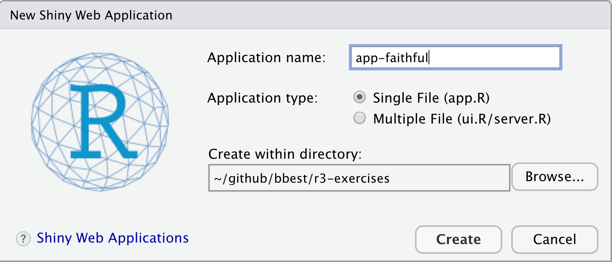
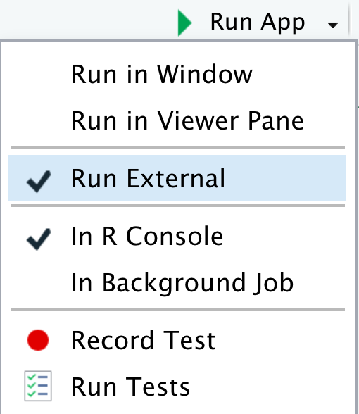
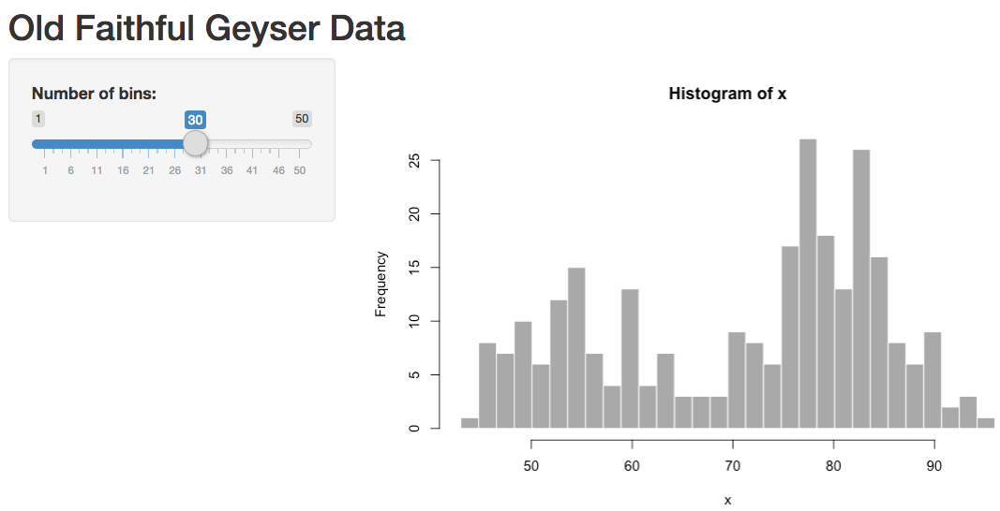
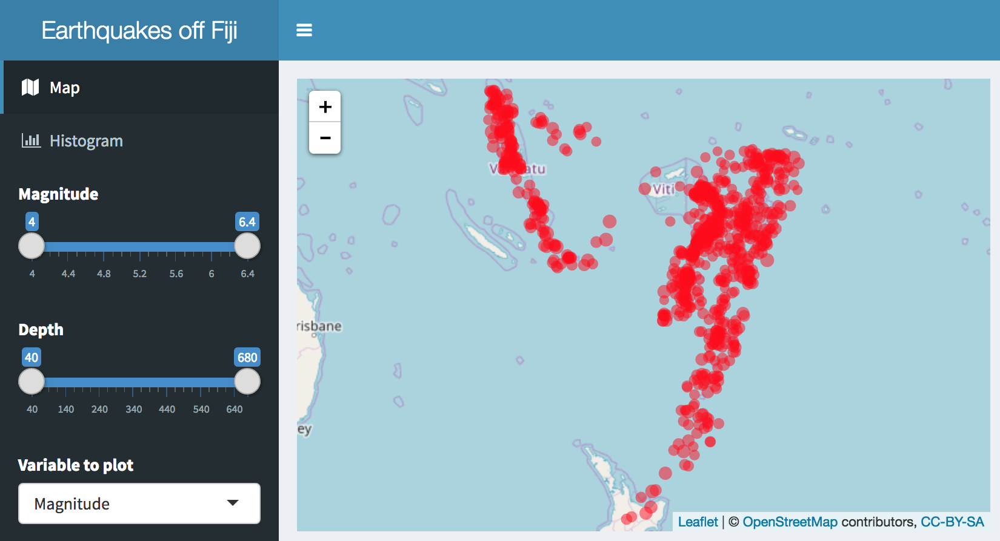
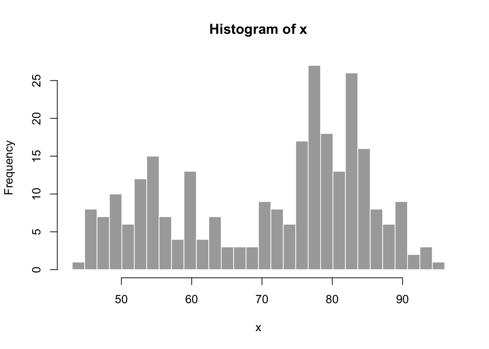
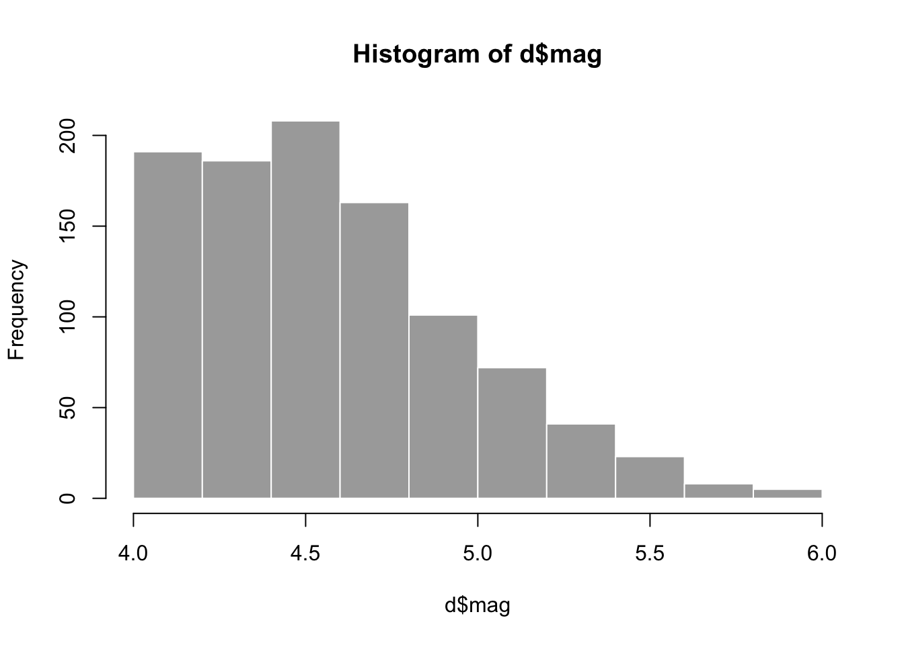
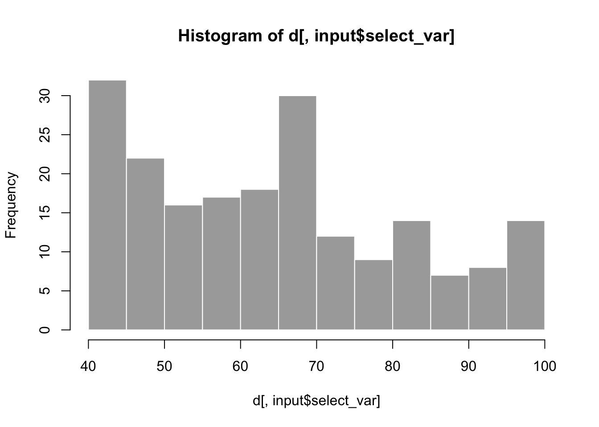

7 Applications
Learning Objectives
Use the Shiny framework to develop online interactive applications accepting user input to render outputs from arbitrary R functions. Server requirements differentiating from simpler Rmarkdown renderings will be reviewed as well as use of Crosstalk to gain similar functionality with Rmarkdown with simple data.
7.1 Install shiny R package
Ensure you have the shiny R package installed. Look in RStudio’s Packages pane and Install if not found when searching for “shiny”.
A few other packages will get used so let’s use the librarian::shelf() command to install if needed:
librarian::shelf(
plotly, reactlog, shiny, shinydashboard)7.2 Create your first Shiny web app
Similar to other examples, let’s create a simple Shiny app starting from the provided default by going to File -> New File -> Shiny Web App… and name it app-faithful (after faithful, the Old Faithful geyser eruption frequency dataset used in this default example):

For now, let’s go with the default Single File option that puts the entire application in app.R rather than splitting it in two (ui.R/server.R). You should see the following contents in the new app.R file contents:
#
# This is a Shiny web application. You can run the application by clicking
# the 'Run App' button above.
#
# Find out more about building applications with Shiny here:
#
# http://shiny.rstudio.com/
#
library(shiny)
# Define UI for application that draws a histogram
ui <- fluidPage(
# Application title
titlePanel("Old Faithful Geyser Data"),
# Sidebar with a slider input for number of bins
sidebarLayout(
sidebarPanel(
sliderInput("bins",
"Number of bins:",
min = 1,
max = 50,
value = 30)
),
# Show a plot of the generated distribution
mainPanel(
plotOutput("distPlot")
)
)
)
# Define server logic required to draw a histogram
server <- function(input, output) {
output$distPlot <- renderPlot({
# generate bins based on input$bins from ui.R
x <- faithful[, 2]
bins <- seq(min(x), max(x), length.out = input$bins + 1)
# draw the histogram with the specified number of bins
hist(x, breaks = bins, col = 'darkgray', border = 'white')
})
}
# Run the application
shinyApp(ui = ui, server = server)Let’s next Run App. Note that you can change the options by clicking on the down triangle next to the button, such as running the app in your default web browser (Run External), a pop-up window or in RStudio’s Viewer Pane.

Now you can change the values in the slider on the left, then see the plot updated:

In Shiny parlance, the histogram plot is reactive to the slider. Normally when creating web apps, this type of “reactivity” is quite complicated to code, but here by simply using input$bins in the plotting function for the output$distPlot, Shiny registers that this plot needs to be updated when the user changes the input$bins value.
7.2.1 Run in showcase mode
This default example along with other are made available in the shiny package’s installed folder:
# get path to "examples" under your installation of the Shiny R package
dir_examples <- system.file("examples", package="shiny")
# get all directories listed there
dirs_examples <- list.dirs(dir_examples, recursive = F)
# show the folder name only, not the rest of the path preceding (ie dirname())
basename(dirs_examples)## [1] "01_hello" "02_text" "03_reactivity" "04_mpg"
## [5] "05_sliders" "06_tabsets" "07_widgets" "08_html"
## [9] "09_upload" "10_download" "11_timer"Another way to launch the shiny app is with the following:
# set directory to 01_hello app, aka the simplest default faithful app
dir_hello_app <- file.path(dir_examples, "01_hello")
# run the app with display.mode = "auto"
# which under shiny R package uses "showcase" mode because of the DESCRIPTION file there (see ?shiny::runApp)
shiny::runApp(dir_hello_app)7.3 Download & run examples
Next, let’s go through examples together.
Download shiny-intro-master.zip into your r3-exercises/, unzip it and rename the top-level folder to apps/ so you can see the following application folders directly under r3-exercises/apps/:
01_faithful: default app from using RStudio, File > New File > Shiny Web App… 02_quakes_mag: swap to quakes dataset, adjust histogram by magnitude03_quakes_depth: add depth slider, select box for variable to histogram04_quakes_map: add leaflet map05_quakes_dashboard: enhance user interface (ie “ui”) withshinydashboard
Numbered folders in this repository correspond with iterative development and enhancement of a Shiny app.
The following sections in this Rmarkdown document demonstrate how you can develop output visualizations for use in a Shiny app, especially by defining input variables as a list (input$*).
Knitting Rmarkdown documents and pushing to Github then allows the HTML to be viewable (using the Github Pages feature). In contrast, Github and most web hosting services can not host a Shiny app. Although the leaflet and plotly visualizations in this document are interactive in the web browser, they do not require the Shiny library or a Shiny server to be displayed. Rather, the HTML output can be easily hosted on the most basic web server or passed as an email attachment. The Shiny context allows for ultimate flexibility with user interactions, but may be overkill for basic visualization. Check out all the amazing htmlwidgets.org and framework that works in the three contexts of: 1) RStudio, 2) Rmarkdown, and 3) Shiny.
7.3.1 01_faithful
Code: 01_faithful
Run from GitHub:
shiny::runGitHub("bbest/shiny-intro", subdir="01_faithful")Run locally:
shiny::runApp("01_faithful")
In order to quickly experiment with visualization, we could pull the code from within the rendering function of the Shiny app and set the input list values that would otherwise be set from the user interface…
input = list(bins = 30)
x <- faithful[, 2]
bins <- seq(min(x), max(x), length.out = input$bins + 1)
hist(x, breaks = bins, col = 'darkgray', border = 'white')
7.3.2 02_quakes_mag
library(tidyverse)
input <- list(slider_mag = c(4, 6))
d <- quakes %>%
filter(
mag >= input$slider_mag[1],
mag <= input$slider_mag[2])
hist(d$mag, col = 'darkgray', border = 'white')
Code: 02_quakes_mag
Run from GitHub:
shiny::runGitHub("bbest/shiny-intro", subdir="02_quakes_mag")Run locally:
shiny::runApp("02_quakes_mag")
7.3.3 03_quakes_depth
library(tidyverse)
input <- list(
select_var = "depth",
slider_mag = c(4, 5),
slider_depth = c(0, 100))
d <- quakes %>%
filter(
mag >= input$slider_mag[1],
mag <= input$slider_mag[2],
depth >= input$slider_depth[1],
depth <= input$slider_depth[2])
hist(d[,input$select_var], col = 'darkgray', border = 'white')
Code: 03_quakes_depth
Run from GitHub:
shiny::runGitHub("bbest/shiny-intro", subdir="03_quakes_depth")Run locally:
shiny::runApp("03_quakes_depth")shiny-intro/05_quakes_dashboard at master · bbest/shiny-intro
7.3.4 04_quakes_map
library(leaflet)
library(glue)
leaflet(data = quakes[1:20,]) %>%
addTiles() %>%
addCircleMarkers(
radius = ~mag, color = "red", stroke = FALSE, fillOpacity = 0.5,
popup = ~glue("<b>mag</b>: {mag}<br>depth: {depth} m"), label = ~as.character(mag))Code: 04_quakes_map
Run from GitHub:
shiny::runGitHub("bbest/shiny-intro", subdir="04_quakes_map")Run locally:
shiny::runApp("04_quakes_map")
7.3.5 05_quakes_dashboard
Use:
library(tidyverse)
library(glue)
input <- list(
select_var = "depth",
slider_mag = c(4, 5),
slider_depth = c(0, 100))
get_df <- function(){
df <- quakes %>%
filter(
mag >= input$slider_mag[1],
mag <= input$slider_mag[2],
depth >= input$slider_depth[1],
depth <= input$slider_depth[2])
df$var <- df[[input$select_var]]
df
}
df <- get_df()
bin_width <- min(c(7, length(unique(df$var))))
g <- ggplot(df, aes(var)) +
geom_histogram(binwidth=bin_width)
plotly::ggplotly(g)Code: 05_quakes_dashboard
Run from GitHub:
shiny::runGitHub("bbest/shiny-intro", subdir="05_quakes_dashboard")Run locally:
shiny::runApp("05_quakes_dashboard")View app directly: https://bdbest.shinyapps.io/05_quakes_dashboard
7.4 Rmarkdown using Crosstalk
library(crosstalk)
library(leaflet)
library(DT)
# Wrap data frame in SharedData
sd <- SharedData$new(quakes[sample(nrow(quakes), 100),])
# Create a filter input
filter_slider("mag", "Magnitude", sd, column=~mag, step=0.1, width=250)# Use SharedData like a dataframe with Crosstalk-enabled widgets
bscols(
leaflet(sd) %>%
addTiles() %>%
addMarkers(),
datatable(
sd, extensions="Scroller", style="bootstrap", class="compact", width="100%",
options=list(deferRender=TRUE, scrollY=300, scroller=TRUE)))